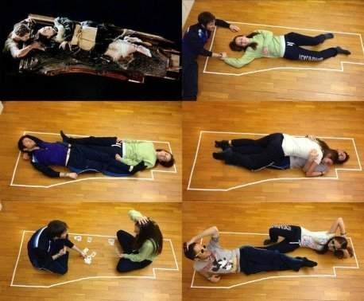

전 세계적으로 불황이 심했던 당시 제작사는
제작비를 굉장히 부담스러워 했다.
제작사의 반대에도
제임스 카메론은 자신의 바람대로
실제 타이타닉 현장을 촬영하여 최초로 타이타닉의 내부를
촬영했다.
여객선에 물이 차오르는 장면을 촬영 당시 케이트 윈슬렛은
옷이 문에 걸려 실제로 사고가 날 뻔 했다.
제임스 카메론은 만약 타이타닉이 실패하면 터미네이터3
를 무료 제작하겠다고 약속했다
잭에 죽음을 아쉬워한 팬들은 잭과 로즈 둘다
어떻게 하면 생존 할 수 있었는 지 직접
문위에 올라가 여러 방법을 찾기도 했다.
바다에 빠진 후의 장면들은
실제로 차가운 바닷물에서 촬영하면 배우들의
목숨이 위험하기에 60℉(16℃) 정도 온도의
물이 담긴 수조에서 촬영했고, 입김을 따로 촬영한
뒤에 합성+익수자들의 몸에 붙은 얼음이나 추위로
인해 핏기 없는 피부색 등도 전부 분장해서
진행했다고 한다
